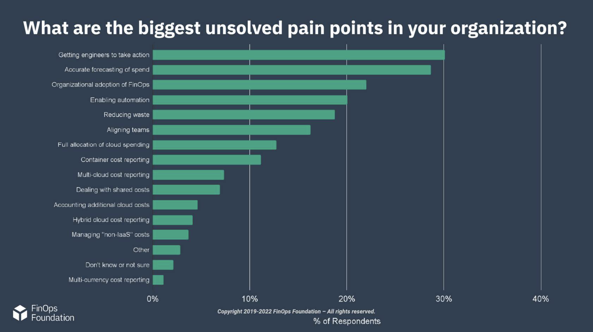

FinOps Practitioner
FinOps Certified Practitioner Introduction
Cloud Changes IT
-
DevOps & Cloud
DevOps & Cloud have broken traditional procurement DevOps allows companies to accelerate technology delivery to meet customer demand using cloud. This shift has put purchasing power in the hands of developers in ways that have broken traditional procurement processes. DevOps and cloud have forced the removal of constraints that has led to the need for a new operating model. This new model allows for collaborative decision making and gives companies the ability to continue to maximize the value of IT investment. This is the premise that led to the development of FinOps.
DevOps & Cloud allow for all costs to be attributed to owners The cost of goods sold for our IT-enabled products and the cost per user of support systems, have always relied upon data centers and infrastructure whose cost is unchangeable. Product owners now have the ability to consume IT services in the exact mix and at the exact times when needed. Product owners can also build in such a way that all of the costs can be examined and taken into account in the pricing, support, and agile development processes. The cloud gives us the ability to develop applications on architectures that scale appropriately to demand, matching IT supply and demand more effectively than ever possible in the data center. All the while, improving our ability to buy incremental small systems and scale to massive heights.
DevOps & Cloud offer unprecedented opportunities Procurement and finance now have the ability to see spending in real-time as well as granularity and attribution. Technology leaders who previously needed to face product demand, changes in technology trends, and data center infrastructure challenges, now have the ability to build incrementally. DevOps engineers, once constrained to whatever the infrastructure team had previously purchased within the confines of the data center, are now free to consider using a wide – and ever growing – selection of technologies to solve a range of customer needs. And, more importantly to the organization, DevOps engineers have the right to buy and use only what they need at any given moment.
How do we develop the ability to tackle these challenges and take advantage of these new opportunities?
-
FinOps
The New Operating Model for the Cloud For many organizations, FinOps is the new operating model for the cloud. FinOps is the practice of bringing technology, business, and finance together to master the unit economics of cloud for competitive advantage. It brings financial accountability to the variable spend model of cloud.
Cloud FinOps is an evolving cloud financial management discipline and cultural practice.
FinOps enables organizations to get maximum business value

Creating a Culture of Accountability FinOps creates a culture of accountability by supporting product, finance, and business teams to collaborate and make real-time decisions related to tradeoffs between cost, speed, and quality. This drives decisions that increase business value to enhance efficiency and better align costs to business needs as well as improving forecasting of cloud costs.

Before moving on...
Think about why your organization is using or moving to the cloud
Consider what you are trying to achieve by using the cloud
-
The Challenge of Cloud
Traditional Technology Consumption Traditionally, companies had a platform team who dreamed of getting some hardware to build their application so they went to procurement. Procurement reviewed their complex business case and if sufficient, gave them access to the money.
In this model...
- DevOps, or developers, are the requesters
- Finance are the gatekeepers, the approvers
- Spend is predictable and static, with known costs
- There are long procurement cycles
- The infrastructure purchased is usually intentionally oversized and not certain to be correct
- There is high risk of some level of failure at a high cost

To complicate things further, in a DevOps world, there are many teams working at once and technology requests are becoming more complex. Now, introduce the world of cloud and automation where procurement can't keep up or is not needed to make purchases. This leads to companies where engineers with automation go directly to the money. Procurement and finance are losing control of the investment and the ability to track it over time. This means they cannot do their fiduciary duty to the company to control and correctly report on costs!
Cloud changes the dynamic...
- Engineers now have the power to spend company money with code
- Finance has less visibility into spend until after the fact and cannot do their fiduciary duty to the company
- Spend is dynamic and changes daily
- There is agile experimentation and some waste
- Overall, there is a lack of communication

- State of FinOps
Below are the biggest unresolved pain points for organizations, gathered from 1,056 responses on the 2022 State of FinOps Survey.

State of FinOps Survey
The State of FinOps data can be found at data.FinOps.org(opens in a new tab). This data will be referenced throughout the course to illustrate points and to provide a way to dig into practitioner content. We see from our 2022 survey that several of the challenges reported as difficult for FinOps practitioners are these we've been discussing: organizational adoption, aligning teams, accounting for cloud costs. We'll talk about the other challenges later in the course.